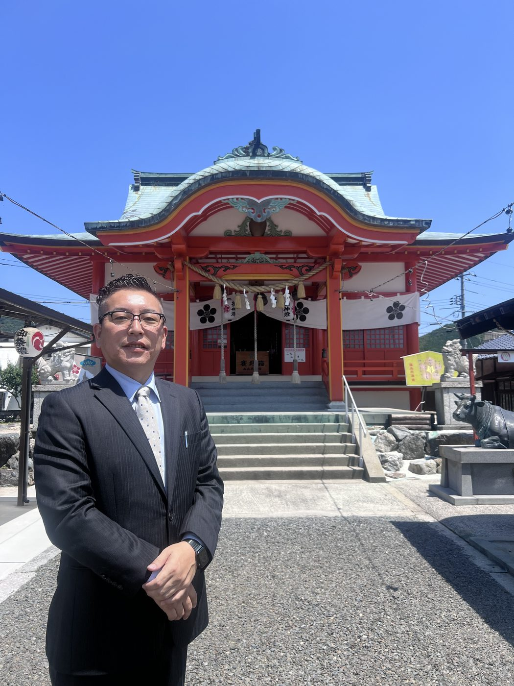

株式会社義翔工業は、山口県岩国市を拠点に地域の皆さまの暮らしを支える工事会社です。

この地域には、使われないまま眠っている土地と家が、たくさんあります。 半径1kmを歩けば、空き家や空き地がいくつも目に入る。 交通の便も、暮らしやすさも、決して悪くない。 それなのに、動かす人がいない——私はそこに、大きな「もったいなさ」と、 同じくらい大きな「可能性」を感じています。
義翔工業は、ただ建物を壊す会社ではありません。 解体し、土地を活かし、街の価値を高めていく。 壊すことは、その土地の次のはじまりでもあると考えています。
家を壊すとき、私たちは壊す前に、その家へ感謝の気持ちで向き合います。 雨の日も、風の日も、台風の日も、住む人を守り続けてくれた家です。 持ち主の方の心の整理にもつながる、この地域を大切にする私たちなりの区切りだと思っています。
一軒一軒、一人ひとりのご事情に向き合い、「負の財産」で終わらせない。 その土地にふさわしい活かし方を一緒に考え、この街をもう一度、 「人が住みたくなる場所」にしていく。 それが、私たちの仕事のいちばんの醍醐味です。
土地や空き家のお困りごとがありましたら、どうぞお気軽にご相談ください。 売る・貸す・活かす——どの道がご家族にとって一番良いか、一緒に考えさせてください。
株式会社義翔工業 代表取締役 岡崎 義丈
| 会社名 | 株式会社義翔工業 |
|---|---|
| 代表者 | 岡崎 義丈 |
| 所在地 | 〒741-0072 山口県岩国市平田5丁目42-10 山本ビル2階 |
| TEL | 0827-35-6635 |
| FAX | 0827-35-6636 |
| 携帯（代表直通） | 090-8715-7704 |
| 事業内容 |
空き家解体工事／空き地整備工事／鳶・土工事／土木工事 プラント工事／塗装工事／アスベスト調査・除去／不動産売買（解体×不動産相談はこちら） |
| 建設業許可 | 山口県知事許可（般-6）第22343号 |
| 宅地建物取引業者免許 | 山口県知事（1）第3880号 |
| 対応エリア | 山口県岩国市を中心とした周辺エリア |
| @gisyoukougyou |